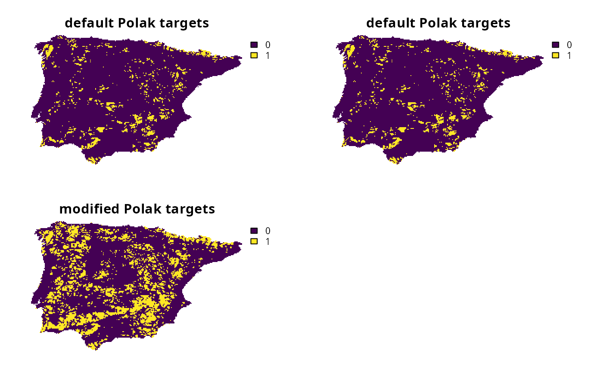
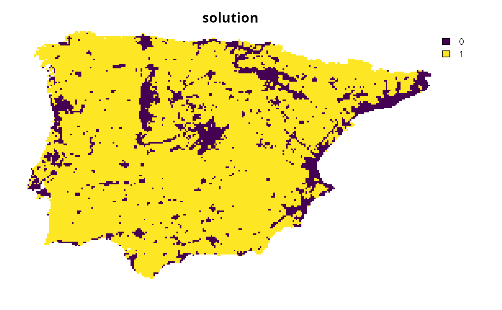
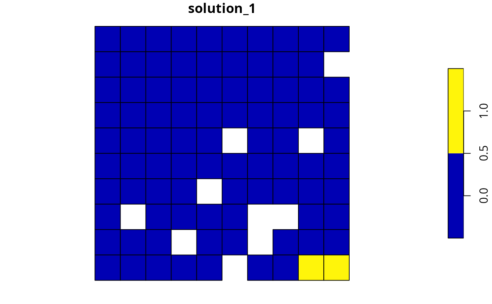

Add targets to a conservation planning problem based on a particular target setting method.
Usage
# S4 method for class 'ConservationProblem,character'
add_auto_targets(x, method)
# S4 method for class 'ConservationProblem,list'
add_auto_targets(x, method)
# S4 method for class 'ConservationProblem,TargetMethod'
add_auto_targets(x, method)Arguments
- x
problem()object.- method
charactervalue,charactervector,list, or object (TargetMethod) specifying the target setting method. See Target methods below for more information.
Value
An updated problem() object with the targets added to it.
Target methods
A variety of options are available for specifying target setting methods.
methodis acharactervalueThis option involves specifying a target setting method based on its name. It is particularly useful when all features should be assigned targets based on the same method, and the method should rely on default parameters. For example, if
xwas aproblem(), then the following code could be used to specify that all features should have their targets calculated based on Jung et al. (2021) with default parameters.The following
charactervalues can be used to specify target setting methods:"jung"(per Jung et al. 2021),"polak"(per Polak et al. 2016),"rodrigues"(per Rodrigues et al. 2004),"ward"(per Ward et al. 2025), and"watson"(per Watson et al. 2010). (2010). Additionally, the following values can be used to set targets based on criteria from the IUCN Red List of Threatened Species (IUCN 2025):"rl_species_VU_A1_B1""rl_species_EN_A1_B1","rl_species_CR_A1_B1","rl_species_VU_A1_B2""rl_species_EN_A1_B2","rl_species_CR_A1_B2","rl_species_VU_A2_B1""rl_species_EN_A2_B1","rl_species_CR_A2_B1","rl_species_VU_A2_B2""rl_species_EN_A2_B2","rl_species_CR_A2_B2","rl_species_VU_A3_B1""rl_species_EN_A3_B1","rl_species_CR_A3_B1","rl_species_VU_A3_B2""rl_species_EN_A3_B2","rl_species_CR_A3_B2","rl_species_VU_A4_B1""rl_species_EN_A4_B1","rl_species_CR_A4_B1","rl_species_VU_A4_B2""rl_species_EN_A4_B2", and"rl_species_CR_A4_B2". Furthermore, the following values can be used to set targets based on criteria from the IUCN Red List of Ecosystems (IUCN 2024):"rl_ecosystem_VU_A1_B1","rl_ecosystem_EN_A1_B1","rl_ecosystem_CR_A1_B1","rl_ecosystem_VU_A1_B2","rl_ecosystem_EN_A1_B2","rl_ecosystem_CR_A1_B2","rl_ecosystem_VU_a2a_B1","rl_ecosystem_EN_a2a_B1","rl_ecosystem_CR_a2a_B1","rl_ecosystem_VU_a2a_B2","rl_ecosystem_EN_a2a_B2","rl_ecosystem_CR_a2a_B2","rl_ecosystem_VU_a2b_B1","rl_ecosystem_EN_a2b_B1","rl_ecosystem_CR_a2b_B1","rl_ecosystem_VU_a2b_B2","rl_ecosystem_EN_a2b_B2","rl_ecosystem_CR_a2b_B2","rl_ecosystem_VU_A3_B1","rl_ecosystem_EN_A3_B1","rl_ecosystem_CR_A3_B1","rl_ecosystem_VU_A3_B2","rl_ecosystem_EN_A3_B2", and"rl_ecosystem_CR_A3_B2".' For convenience, these options can also be specified with lower case letters (e.g.,"rl_species_VU_A1_B1"may alternatively be specified as"rl_species_vu_a1_b1"). Note that target setting methods that require additional data or parameters cannot be specified withcharactervalues.methodis acharactervectorThis option involves specifying a target setting method for each feature based on the name of the method. It is particularly useful when particular features should be assigned targets based on different methods, and all methods rely on default parameters. For example, if
xwas aproblem()with three features, then the following code could be used to specify a target based on Jung et al. (2021) for the first feature, target based on Polak et al. (2015) for the second feature, and target based on Jung et al. (2021) for the third feature (note that all targets are based on default parameters).Note that
methodmust specify a value for each feature inx, and the order of the method values should follow the order of the features inx(i.e, perfeature_names(x)). For details on the availablemethodvalues, please refer to the first option wheremethodis acharactervalue.methodis an object for specifying a methodThis option involves specifying a target setting method based on an object. It is particularly useful when all features should be assigned targets based on the same method, and the parameters for calculating the targets should be customized. For example, if
xwas aproblem(), then the following could could be used to specify that all features should have their targets calculated based on Jung et al. (2021) with an uplift of 5%.The following functions can be used to create an object for specifying a target setting method:
spec_absolute_targets(),spec_relative_targets(),spec_area_targets(),spec_interp_absolute_targets(),spec_interp_area_targets(),spec_duran_targets(),spec_jung_targets(),spec_polak_targets(),spec_pop_size_targets(),spec_rl_ecosystem_targets(),spec_rl_species_targets(),spec_rodrigues_targets(),spec_rule_targets(),spec_ward_targets(),spec_watson_targets(),spec_wilson_targets(),spec_min_targets(), andspec_max_targets().methodis alistThis option involves specify a target setting method based on a
listof objects. It is particularly useful when particular features should be assigned different targets based on different methods, and at least one of the methods requires customized parameters. For example, ifxwas aproblem()with three features, then the following code could be used to specify (i) a target for the first feature based on Jung et al. (2021) with customized parameters (i.e,jung_targets(prop_uplift = 0.05)), (ii) a target for the second feature based on Polak et al. (2015) with default parameters via the name method name (i.e.,"polak"), and (iii) a target based on Jung et al. (2021) with default parameters via an object (i.e.,jung_targets()).Note that
methodmust specify a value for each feature inx, and the order of the method values should follow the order of the features inx(i.e, perfeature_names(x)). For details on the availablemethodvalues, please refer to the previous options.
Data calculations
Many of the functions for specifying target setting methods involve
calculating targets based on the spatial extent of the features in x
(e.g., spec_jung_targets(), [spec_rodrigues_targets(), and others).
Although this function for adding targets can be readily applied to
problem() objects that
have the feature data provided as a terra::rast() object,
you will need to specify the spatial units for the features
when building a problem() object if the feature data
are provided in a different format. In particular, if the feature
data are provided as a data.frame or character vector,
then you will need to specify an argument to feature_units when
using the problem() function. See the Examples section below for a
demonstration of using the feature_units parameter.
Target setting
Many conservation planning problems require targets. Targets are used to specify the minimum amount, or proportion, of a feature's spatial distribution that should ideally be protected. This is important so that the optimization process can weigh the merits and trade-offs between improving the representation of one feature over another feature. Although it can be challenging to set meaningful targets, this is a critical step for ensuring that prioritizations meet the stakeholder objectives that underpin a prioritization exercise (Carwardine et al. 2009). In other words, targets play an important role in ensuring that a priority setting process is properly tuned according to stakeholder requirements. For example, targets provide a mechanism for ensuring that a prioritization secures enough habitat to promote the long-term persistence of each threatened species, culturally important species, or economically important ecosystem services under consideration. Since there is often uncertainty regarding stakeholder objectives (e.g., how much habitat should be protected for a given species) or the influence of particular target on a prioritization (e.g., how would setting a 90% or 100% for a threatened species alter priorities), it is often useful to generate and compare a suite of prioritizations based on different target scenarios.
References
Carwardine J, Klein CJ, Wilson KA, Pressey RL, Possingham HP (2009) Hitting the target and missing the point: target‐based conservation planning in context. Conservation Letters, 2: 4–11.
Jung M, Arnell A, de Lamo X, García-Rangel S, Lewis M, Mark J, Merow C, Miles L, Ondo I, Pironon S, Ravilious C, Rivers M, Schepaschenko D, Tallowin O, van Soesbergen A, Govaerts R, Boyle BL, Enquist BJ, Feng X, Gallagher R, Maitner B, Meiri S, Mulligan M, Ofer G, Roll U, Hanson JO, Jetz W, Di Marco M, McGowan J, Rinnan DS, Sachs JD, Lesiv M, Adams VM, Andrew SC, Burger JR, Hannah L, Marquet PA, McCarthy JK, Morueta-Holme N, Newman EA, Park DS, Roehrdanz PR, Svenning J-C, Violle C, Wieringa JJ, Wynne G, Fritz S, Strassburg BBN, Obersteiner M, Kapos V, Burgess N, Schmidt- Traub G, Visconti P (2021) Areas of global importance for conserving terrestrial biodiversity, carbon and water. Nature Ecology and Evolution, 5:1499–1509.
IUCN (2025) The IUCN Red List of Threatened Species. Version 2025-1. Available at https://www.iucnredlist.org. Accessed on 23 July 2025.
IUCN (2024). Guidelines for the application of IUCN Red List of Ecosystems Categories and Criteria, Version 2.0. Keith DA, Ferrer-Paris JR, Ghoraba SMM, Henriksen S, Monyeki M, Murray NJ, Nicholson E, Rowland J, Skowno A, Slingsby JA, Storeng AB, Valderrábano M, Zager I (Eds.). Gland, Switzerland: IUCN.
Polak T, Watson JEM, Fuller RA, Joseph LN, Martin TG, Possingham HP, Venter O, Carwardine J (2015) Efficient expansion of global protected areas requires simultaneous planning for species and ecosystems. Royal Society Open Science, 2: 150107.
Ward M, Possingham HP, Wintle BA, Woinarski JCZ, Marsh JR, Chapple DG, Lintermans M, Scheele BC, Whiterod NS, Hoskin CJ, Aska B, Yong C, Tulloch A, Stewart R, Watson JEM (2025) The estimated cost of preventing extinction and progressing recovery for Australia's priority threatened species. Proceedings of the National Academy of Sciences, 122: e2414985122.
Watson JEM, Evans MC, Carwardine J, Fuller RA, Joseph LN, Segan DB, Taylor MFJ, Fensham RJ, Possingham HP (2010) The capacity of Australia's protected-area system to represent threatened species. Conservation Biology,25: 324–332.
See also
Other functions for adding targets:
add_absolute_targets(),
add_group_targets(),
add_manual_targets(),
add_relative_targets()
Examples
# \dontrun{
# set seed for reproducibility
set.seed(500)
# load data
sim_complex_pu_raster <- get_sim_complex_pu_raster()
sim_complex_features <- get_sim_complex_features()
sim_pu_polygons <- get_sim_pu_polygons()
# create base problem
p0 <-
problem(sim_complex_pu_raster, sim_complex_features) %>%
add_min_set_objective() %>%
add_binary_decisions() %>%
add_default_solver(gap = 0, verbose = FALSE)
# create problem with Polak et al. (2015) targets by using a function to
# specify the target setting method
p1 <-
p0 %>%
add_auto_targets(method = spec_polak_targets())
# create problem with Polak et al. (2015) targets by using a character value
# to specify the target setting method
# (note that this yields exactly the same targets as p1, and simply
# offers an alternative for specifying targets with default parameters)
p2 <-
p0 %>%
add_auto_targets(method = "polak")
# create problem with modified Polak et al. (2015) targets by using a
# a function to customize the parameters
# (note that this yields exactly the same targets as p1, and simply
# offers an alternative for specifying targets with default parameters)
p3 <-
p0 %>%
add_auto_targets(method = spec_polak_targets(common_relative_target = 0.3))
# solve problems
s <- c(solve(p1), solve(p2), solve(p3))
names(s) <- c(
"default Polak targets", "default Polak targets", "modified Polak targets"
)
# plot solutions
plot(s, axes = FALSE)

# in the previous examples, we specified the targets for each of the features
# based on the same target setting method. we can also specify a particular
# target setting method for each feature. to achieve this, we can
# provide the targets as a list. for example, here we will specify that
# the first 10 features should have their targets based on
# Jung et al. (2021) targets (with default parameters), the following 15
# features should have their targets based on Ward et al. (2025) targets
# (with default parameters), and all the remaining features should have
# their targets based on modified Jung et al. (2021) targets.
# note that add_group_targets provides a more convenient interface for
# specifying targets for multiple features
# create a list with the target setting methods
target_list <- append(
append(
rep(list(spec_jung_targets()), 10),
rep(list(spec_ward_targets()), 15)
),
rep(
list(spec_jung_targets(prop_uplift = 0.3)),
terra::nlyr(sim_complex_features) - 25
)
)
# create problem with the list of target setting methods
p4 <- p0 %>% add_auto_targets(method = target_list)
# solve problem
s4 <- solve(p4)
# plot solution
plot(s4, main = "solution", axes = FALSE)

# here we will show how to set the feature_units when the feature
# are not terra::rast() objects. in this example, we have planning units
# stored in an sf object (i.e., sim_pu_polygons) and the feature data will
# be stored as columns in the sf object.
# we will start by simulating feature data for the planning units.
# in particular, the simulated values will describe the amount of habitat
# for each feature expressed as acres (e.g., a value of 30 means 30 acres)
sim_pu_polygons$feature_1 <- runif(nrow(sim_pu_polygons), 0, 500)
sim_pu_polygons$feature_2 <- runif(nrow(sim_pu_polygons), 0, 600)
sim_pu_polygons$feature_3 <- runif(nrow(sim_pu_polygons), 0, 300)
# we will now build a problem with these data and specify the
# the feature units as acres because that those are the units we
# used for simulating the data. also, we will specify targets
# of 2 km^2 of habitat for each feature. although the feature units are
# acres, the function is able to able to automatically convert the units.
p5 <-
problem(
sim_pu_polygons,
c("feature_1", "feature_2", "feature_3"),
cost_column = "cost",
feature_units = "acres"
) %>%
add_min_set_objective() %>%
add_auto_targets(
method = spec_area_targets(targets = 2, area_units = "km^2")
) %>%
add_binary_decisions() %>%
add_default_solver(gap = 0, verbose = FALSE)
# solve problem
s5 <- solve(p5)
# plot solution
plot(s5[, "solution_1"], axes = FALSE)

# }